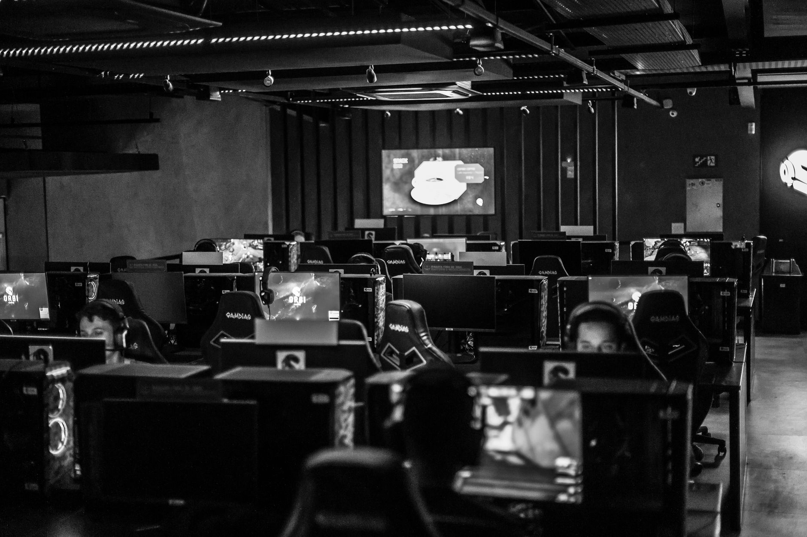

A masterclass in individual skill
The BLAST Open tournament has already provided several unexpected turns, but nothing quite prepared the audience for the sheer dominance displayed by Latto. During a critical juncture in the match against FUT, Latto stepped up to deliver an incredible ace that completely shifted the momentum of the game. This single round of perfection not only silenced the opposition but also breathed new life into the Legacy roster.
An ace in professional Counter-Strike is never easy, but doing so under the immense pressure of a tournament like BLAST Open is a testament to Latto's mental fortitude. The player managed to navigate through tight corners and unexpected utility usage from FUT, proving that individual mechanics can sometimes override even the most disciplined team setups.
Observers noted that the precision in Latto's crosshair placement was nearly flawless throughout the sequence. Every shot seemed calculated, leaving the FUT defenders with almost no room to react or reposition effectively.
Legacy overcomes the FUT challenge
FUT entered the match with high expectations, looking to assert their dominance in the early stages of the tournament. For much of the opening half, it appeared that their coordinated executes and superior utility usage might be enough to dismantle Legacy. However, the tide began to turn as Legacy's defensive setups became increasingly difficult to crack.
The match was characterized by several intense tactical battles. While FUT attempted to exploit gaps in the Legacy economy, Legacy responded with aggressive pushes and disciplined retakes. The game eventually boiled down to a test of nerves, where the team that could maintain composure during high-stakes clutches would ultimately prevail.
The impact of momentum in esports
In competitive gaming, momentum is often an invisible force that dictates the flow of a match. When Latto secured those five kills, the energy in the server shifted palpably. You could see the hesitation in the FUT players' movements, a common psychological byproduct when a single player begins to dominate the field of play.
It is moments like these that define a player's career and a team's tournament run. When one person finds that incredible rhythm, the entire squad feels empowered to play more confidently.
Legacy used this momentum to press their advantage, securing key rounds that prevented FUT from mounting a comeback. This ability to convert a single moment of brilliance into a full-scale victory is what separates the top-tier organizations from the rest of the pack.
Looking ahead at the BLAST Open
With this victory under their belts, Legacy has firmly established themselves as a dark horse in the BLAST Open. They have shown that they possess both the tactical depth to survive long matches and the raw firepower to win individual duels when it matters most. Fans will be watching closely to see if they can maintain this level of consistency against the tournament favorites.
FUT, on the other hand, will need to regroup and analyze their defensive failures. While their individual players are highly capable, the lack of cohesion during Latto's rampage suggests that their communication may have broken down under pressure. They will likely spend the next few days refining their anti-stratting techniques to ensure such a collapse does not happen again.
The changing landscape of professional rosters
As we witness incredible performances like Latto's, it is also important to remember that the esports landscape is constantly shifting. Team compositions and player rosters are in a state of perpetual motion. Success often depends not just on individual skill, but on finding the perfect synergy within a stable lineup.
Roster changes can be both a blessing and a curse for organizations. While bringing in new talent can inject fresh energy, it can also disrupt the hard-earned chemistry that leads to tournament victories. We have seen many teams struggle to adapt to new teammates, even when those individuals possess high mechanical skill.
For more insights into how team dynamics are shifting across the industry, you might find our previous coverage interesting, such as when Bestia Esports Announces Departure of Player Tomaszin. Staying updated on these transitions is crucial for any fan following the professional circuit.
See Also
If you enjoyed this Esports News article, check out Bestia Esports Announces Departure of Player Tomaszin for more useful reading.